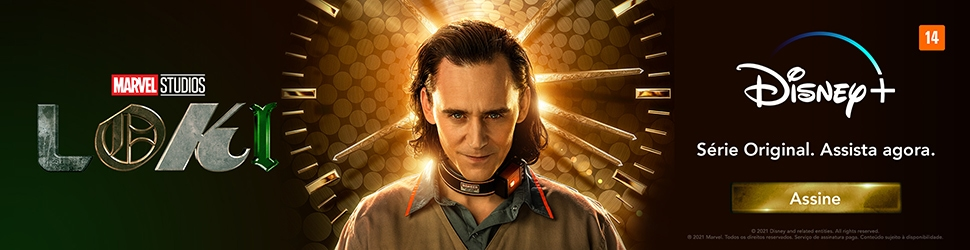

Novidades:
Loki - Saiu a Nova Série da Disney
Charmoso, persuasivo, egoísta e trapaceiro: estas são apenas algumas das características de Loki, vivido no Universo Cinematográfico da Marvel pelo ator Tom Hiddleston.
Apesar de ter surgido nos cinemas como um dos principais antagonistas de seu irmão, o deus do trovão Thor (Chris Hemsworth), Loki conquistou o público, muito por conta do carisma de Hiddleston. Como forma de desenvolver o personagem e engrossar o caldo das histórias derivadas da mitologia nórdica no MCU, a série Loki chega nesta quarta (9) ao serviço de streaming Disney+.
A trajetória do deus da trapaça é bem diversa, quando analisamos as suas aparições anteriores nos filmes da Marvel Studios. Loki construiu um arco que o fez se livrar do estigma de traidor mesquinho para alcançar o status de mártir, sendo morto por Thanos em Vingadores: Guerra Infinita (2018).
Mas, como no Universo Marvel tudo é possível, em Vingadores: Ultimato (2019), nosso vilão favorito aparece novamente, quando o grupo de heróis decide voltar no tempo. E é a partir desse momento que a série Loki se desenvolve.
Curiosidade!
Em coletiva de imprensa sobre a série, o roteirista Michael Waldron disse que filmes como Zodíaco e O Silêncio dos Inocentes inspiraram a história e a atmosfera da trama que, segundo ele, traz elementos de filmes de suspense e assassinato.Como a versão de Loki que veremos na série é a mesma que conhecemos em Os Vingadores, devemos nos deparar com uma faceta mais vilanesca e egoica do personagem, que ainda não se desenvolveu a partir da redenção que outros momentos dos filmes proporcionaram.
Seguindo os passos de WandaVision e Falcão e o Soldado Invernal, Loki abrirá o leque de possibilidades para novas produções da Marvel, tanto nos cinemas quanto no streaming. A serie contará com um total de seis episódios, que serão lançados semanalmente, às quartas-feiras, no catálogo do Disney+.